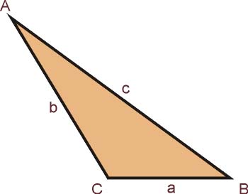

El triángulo es un polígono conformado por tres lados, así como por tres vértices y tres ángulos interiores.
El triángulo es una figura geométrica muy importante y base de otros polígonos. Así, cualquier polígono con más de tres lados (como el cuadrado) puede dividirse en distintos triángulos cuando se trazan sus diagonales, como vemos en la figura de abajo.
Vale recordar que la diagonal es aquel segmento que une un vértice de la figura geométrica con el vértice del lado opuesto.
Cabe señalar además que un polígono es una figura geométrica bidimensional que se forma de la unión de distintos puntos (que no formen parte de la misma línea) mediante segmentos de recta.
Asimismo, una propiedad importante del triángulo es que sus ángulos interiores suman 180º, es decir:
∝+β+γ= 180º
